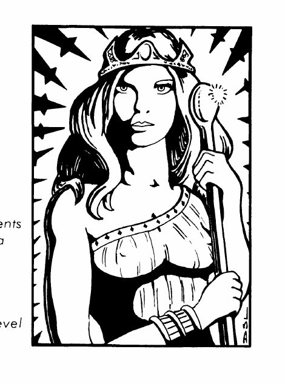

吉尔鲁（火神）与伊什塔尔 · Girru与伊什塔尔 Ishtar
吉尔鲁是守序善良的弱等神，AC −2，生命值 280，周身热浪使 10 英尺内每轮受到 10 点伤害；他像 40 级魔法师一样施放火焰法术，+3 斧头每击造成 2–20 加力量伤害。伊什塔尔是中立的强大神，AC −4，生命值 250，拥有持续魅惑、变形和由七头魔法狮拉动的飞天战车；她使用蓝水晶法杖把法术转为直接能量伤害。

上一节：吉尔伽美什 · Gilgamesh
下一节：马尔杜克、涅尔伽尔与拉曼 · Marduk、涅尔伽尔 Nergal 与拉曼 Ramman